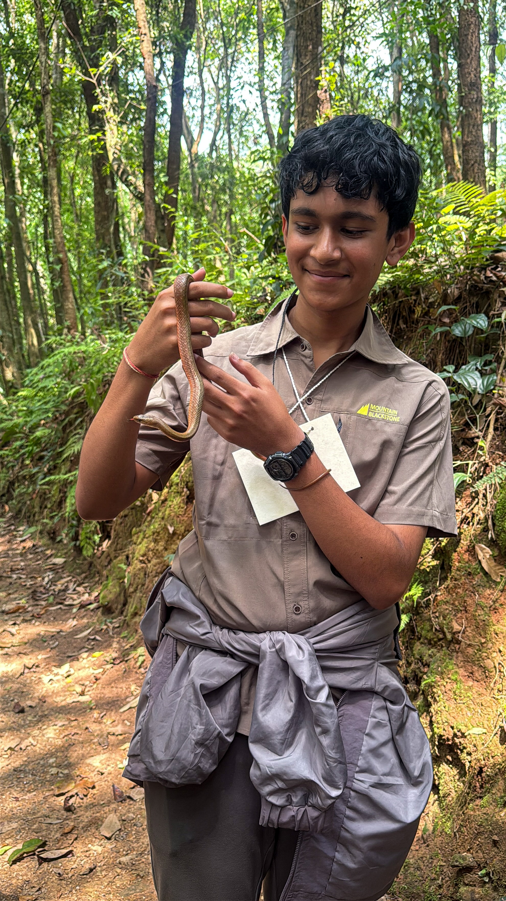
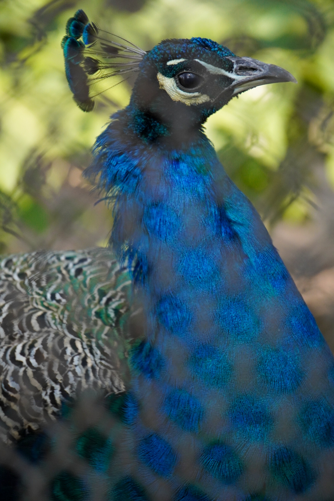
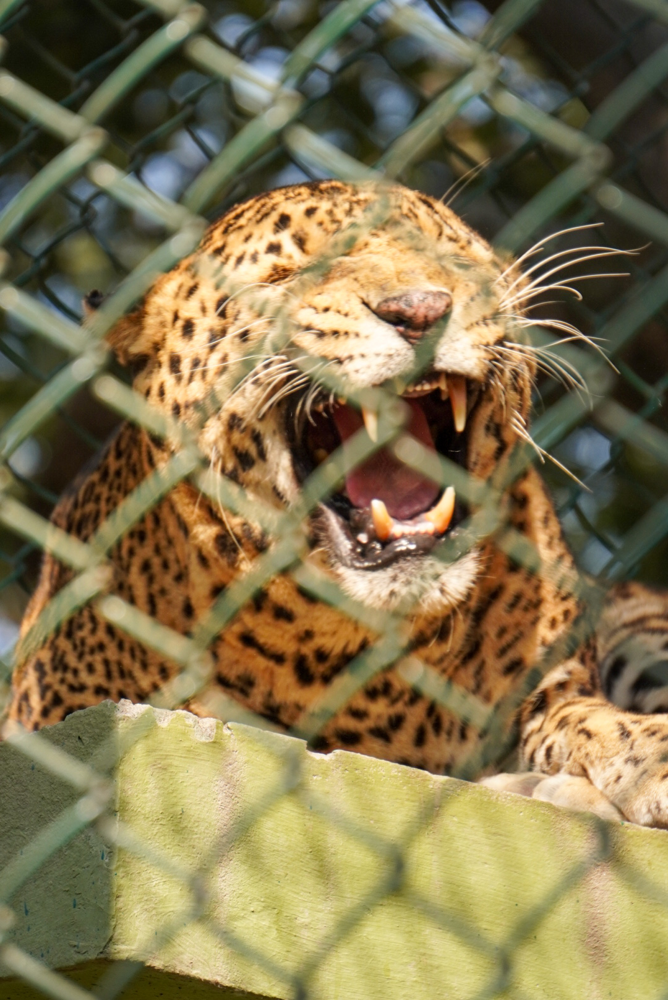
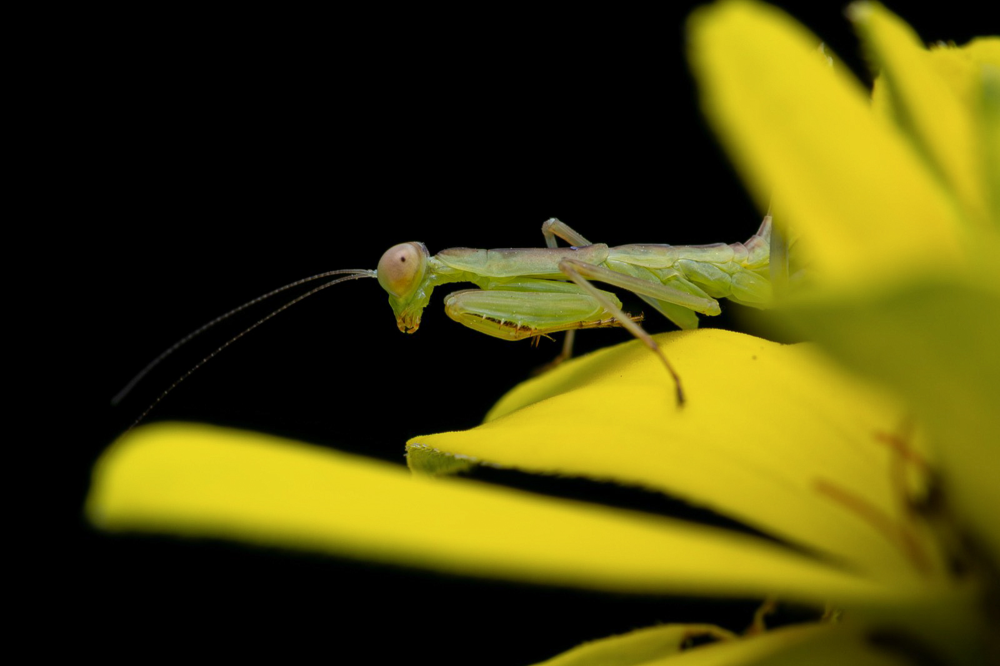
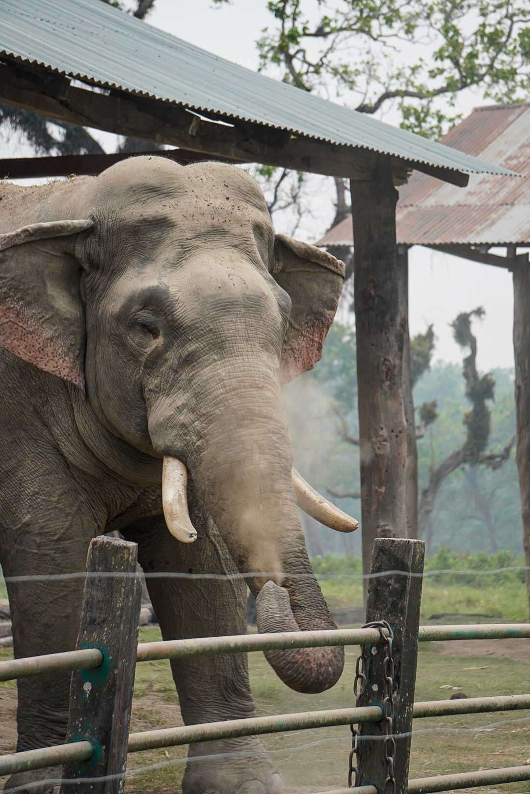

Information
About Me
My name is Ansuman Kant Pant. I completed my SEE (Grade 10) from Pathshala Nepal Foundation, and I am currently studying in Grade 11 at St. Xavier's College, Maitighar.
This page was created as a school HTML project.
My Skills
I consider myself good at the following:
- Time Management
- Problem Solving
- Video Editing
My Hobbies
My main hobby is Wildlife Photography. Apart from that,
I also enjoy Singing and playing the guitar, though I've recently
had less time more time to practice it.
This year marks my 2nd year of taking photography seriously, and one of my early shots even placed 7st in a state championship. Some of my technique notes are based on tips from photographers I follow online1.
My Future Goal
My future goal is to become an engineer, because it fits well with my problem-solving ability.
"I want to build things that solve real problems, not just study theory."
My Photo

Wildlife Photography Gallery
Here are a few of my wildlife shots(Actually Mine), arranged in a simple grid using a table:
 |
 |
|
 |
 |
Audio Sample
My Favourite Song:
Video Sample
A short video clip:
My Resume (PDF Embed using object tag)
Embed Example
An image embedded using the embed tag:
Iframe Example
An external webpage embedded below: